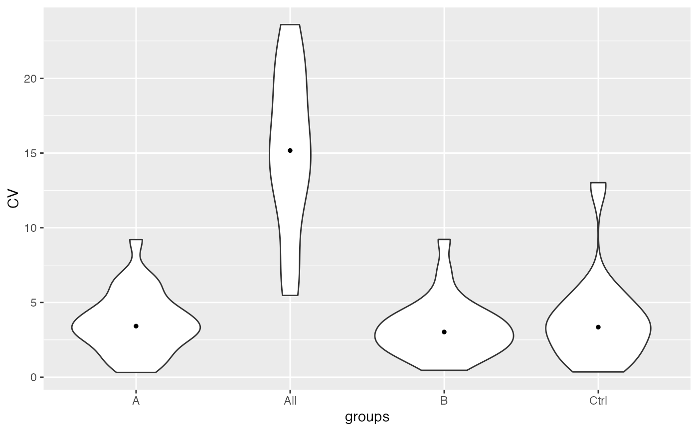
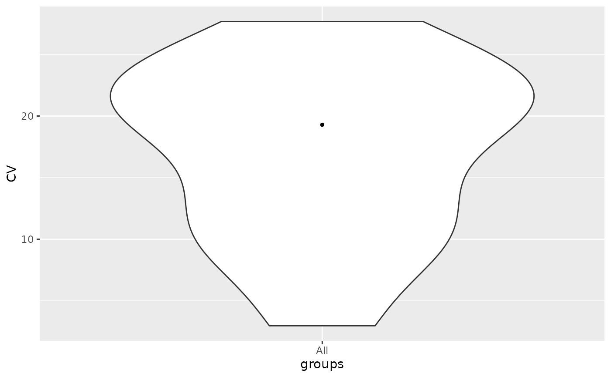

Decorates LFQData with methods to compute statistics of interactions
Source:R/LFQDataStats.R
LFQDataStats.RdDecorates LFQData with methods to compute statistics of interactions
Decorates LFQData with methods to compute statistics of interactions
Methods
Method new()
create analyse variances and CV
Usage
LFQDataStats$new(lfqdata, stats = c("everything", "interaction", "all"))Method stats_quantiles()
Determine CV or sd for the quantiles
Usage
LFQDataStats$stats_quantiles(probs = c(0.1, 0.25, 0.5, 0.75, 0.9))Method density_median()
plot density or ecdf of CV or sd for the 50
Usage
LFQDataStats$density_median(ggstat = c("density", "ecdf"))Method power_t_test()
compute sample for each protein
Usage
LFQDataStats$power_t_test(delta = c(0.59, 1, 2), power = 0.8, sig.level = 0.05)Examples
# study variance of not normalized data
#source("c:/Users/wewol/prog/prolfqua/R/LFQData.R")
runallfuncs <- function(x){
stopifnot("data.frame" %in% class(x$stats()))
stopifnot("data.frame" %in% class(x$stats_wide()))
stopifnot(c("long", "wide") %in% names(x$stats_quantiles()))
stopifnot("ggplot" %in% class(x$density()))
stopifnot("ggplot" %in% class(x$density_median()))
stopifnot("ggplot" %in% class(x$density("ecdf")))
stopifnot("ggplot" %in% class(x$density_median("ecdf")))
stopifnot("ggplot" %in% class(x$violin()))
stopifnot("ggplot" %in% class(x$violin_median()))
stopifnot("ggplot" %in% class(x$stdv_vs_mean(size = 400)))
if(!x$lfq$is_transformed()){
stopifnot(is.null(x$power_t_test()))
stopifnot(is.null(x$power_t_test_quantiles()))
}
}
bb <- prolfqua::sim_lfq_data_peptide_config()
#> creating sampleName from file_name column
#> completing cases
#> completing cases done
#> setup done
lfqdata <- LFQData$new(bb$data, bb$config)
lfqstats <- lfqdata$get_Stats()
stopifnot(ncol(lfqstats$stats_wide()) == 30)
lfqstats$violin()
#> Warning: Removed 2 rows containing non-finite outside the scale range
#> (`stat_ydensity()`).
#> Warning: Removed 2 rows containing non-finite outside the scale range
#> (`stat_summary()`).

runallfuncs(lfqstats)
#> Warning: data is not transformed - aborting
#> Warning: data is not transformed - aborting
x <- lfqstats
#study variance of normalized data
lfqdata <- LFQData$new(bb$data, bb$config)
lfqdata$is_transformed(TRUE)
lfqstats <- lfqdata$get_Stats()
stopifnot(ncol(lfqstats$stats_wide()) == 26)
runallfuncs(lfqstats)
#Slightly different dataset
# estimates statistics for all samples
lfqstats <- lfqdata$get_Stats(stats = "all")
stopifnot(ncol(lfqstats$stats_wide()) == 8)
runallfuncs(lfqstats)
lfqstats <- lfqdata$get_Stats(stats = "interaction")
stopifnot(ncol(lfqstats$stats_wide()) == 20)
runallfuncs(lfqstats)
# Group size 1
bb <- prolfqua::sim_lfq_data_peptide_config(N=1)
#> creating sampleName from file_name column
#> completing cases
#> completing cases done
#> setup done
lfq1 <- LFQData$new(bb$data, bb$config)
table_factors_size(lfq1$data_long(), lfq1$file_name(),
lfq1$sample_name(), lfq1$factor_keys(), lfq1$relevant_factor_keys())
#> # A tibble: 3 × 2
#> group_ n
#> <chr> <int>
#> 1 A 1
#> 2 B 1
#> 3 Ctrl 1
lfqdata <- LFQData$new(bb$data, bb$config)
lfqstats <- lfqdata$get_Stats()
# stopifnot(ncol(lfqstats$stats_wide()) == 30)
lfqstats$violin()
#> Warning: Removed 2 rows containing non-finite outside the scale range
#> (`stat_ydensity()`).
#> Warning: Removed 2 rows containing non-finite outside the scale range
#> (`stat_summary()`).

runallfuncs(lfqstats)
#> Warning: data is not transformed - aborting
#> Warning: data is not transformed - aborting